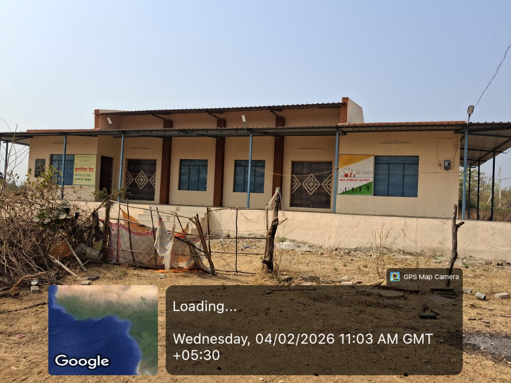

प्रत्येक सुविधेच्या ठिकाणी जाण्यासाठी “नकाशावर पहा” बटणावर क्लिक करा.

आदिवासी समुदायाकरीता बहुउद्देशिय केंद्र
पीएम जनमन योजनेअंतर्गत आदिवासी समुदायासाठी उभारण्यात आलेले बहुउद्देशिय केंद्र (Multi Purpose Centre).

जि.प. वरिष्ठ प्राथमिक शाळा, पेटुर
गावातील मुलांना प्राथमिक शिक्षण देणारी जिल्हा परिषद शाळा.
📍 नकाशावर पहा
अंगणवाडी केंद्र क्र. १४
एकात्मिक बालविकास सेवेअंतर्गत बालकांसाठी पोषण आहार व पूर्वप्राथमिक शिक्षण.
📍 नकाशावर पहा